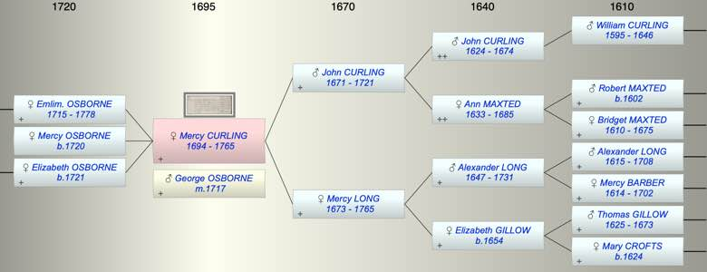
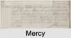

| [Index] |
| Mercy CURLING (1694 - 1765) |
|  |
|  |
| b. 1694 at St Laurence |
| m. 29 Apr 1717 George OSBORNE at St Mary Bredman, Canterbury |
| d. 1765 at Ramsgate aged 71 |
| Parents: |
| John CURLING (1671 - 1721) |
| Mercy LONG (1673 - 1765) |
| Children (3): |
| Emlim. Emblem OSBORNE (1715 - 1778) |
| Mercy OSBORNE (1720 - ) |
| Elizabeth OSBORNE (1721 - ) |
| Events in Mercy CURLING (1694 - 1765)'s life | |||||
| Date | Age | Event | Place | Notes | Src |
| 1694 | Mercy CURLING was born | St Laurence | Note 1 | ||
| 1715 | 21 | Birth of daughter Emlim. Emblem OSBORNE | Lydden | Note 2 | |
| 29 Apr 1717 | 23 | Married George OSBORNE | St Mary Bredman, Canterbury | Note 3 | |
| 1720 | 26 | Birth of daughter Mercy OSBORNE | Lydden | Note 4 | |
| 1721 | 27 | Birth of daughter Elizabeth OSBORNE | Lydden | Note 5 | |
| 1721 | 27 | Death of father John CURLING (aged 50) | St Laurence | ||
| 1765 | 71 | Mercy CURLING died | Ramsgate | Note 6 | |
| 1765 | 71 | Death of mother Mercy LONG (aged 92) | St Laurence | Note 7 | |
| Personal Notes: |
|
Her father's will establishes that she married a George Osborne. The marriage is very probable that recorded as George Osbourn of Lydden to Mercy Cullen of St Lawrence on 29 Apr 1717 St Mary Bredman, Canterbury. The register definitely has Cullen but this likely to be a mishearing of Curling. Her children were baptised at Lydden.
Mercy Osborn – Will summary PRO 11/197 will made 11 Feb 1765 proved 2 Mar 1765 • Mercy Osborn widow to be buried at Lidden (ie Lydden) near her husband • to Grandsons William, George and Osborn Deverson equal shares of her linen, chests, utensils, stove • to daughter-in-law Emblem wife of Richard Sayer household furniture, goods and clothes • to great grandson William Osborn Deverson £5 to be paid to his father William Deverson • All other moneys and personal estate to be shared between the 3 grandsons when 21 • to ‘daughter Emblem Sayer’ her property near Sole Street in St Peter, Thanet, lately purchased from Anthony Curling and the annual rent of 50s from the Farm House at Chilton occupied by nephew Daniel Curling. brother William Curling and nephew Daniel Curling to be executors Witnesses Elizabeth Curling, Dorothy Read and John Fagg Emblem is Mercy's daughter rather than daughter on law Great grandson WIlliam Osbourn Deverson is probably grandson of Mercy's daughter Elizabeth Poll books for Kent ex Ancestry has Mercy Osbourne occupying the house of Willima Curlilng, freeholder |
| Created on a Mac™ using iFamily for Mac™ on 8 Oct 2023 |